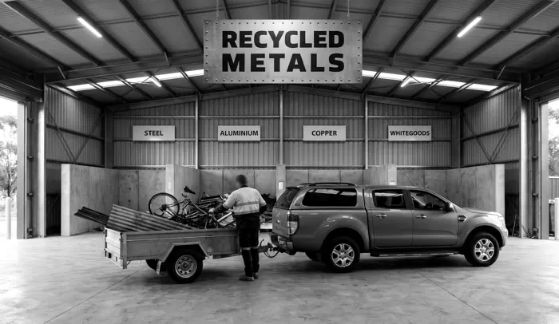
01Drop it off yourself
Free, any volume, from a ute load to a truckload. Bring it in and unload under cover.
Drop-off details
Recycled Metals · Recycling metals since 1955
From a ute load to a truckload, bring it to Recycled Metals. Bins and bigger jobs by enquiry.
01 · Any volume
Each one opens its full list of what can be dropped off. For councils, state roads, schools, offices and hospitals, collection is by enquiry.
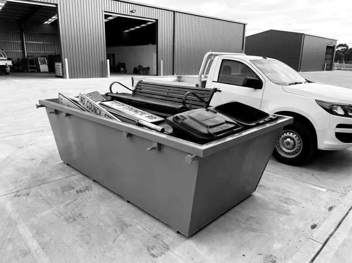
01Councils & local government51 items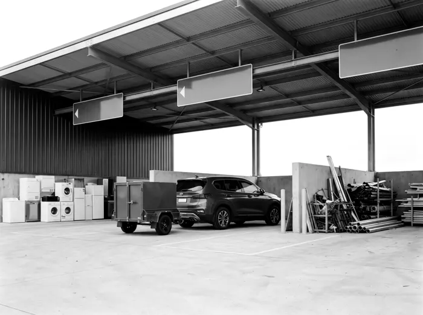
02Transfer stations & resource recovery centres54 items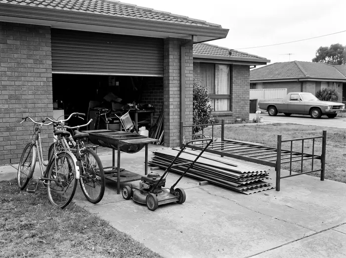
03Residential & household52 items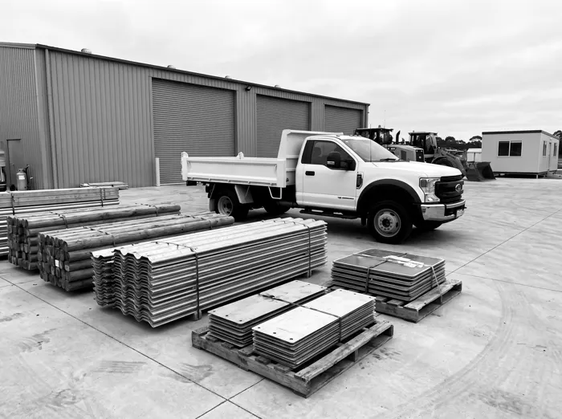
04State roads & transport infrastructure50 items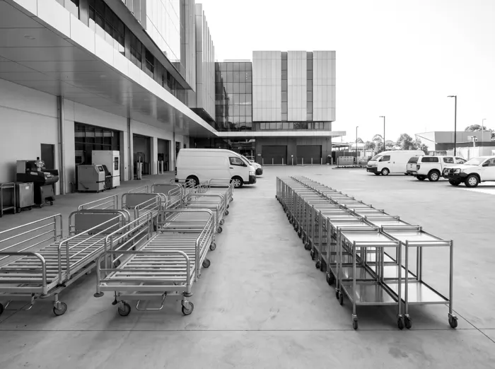
05Health, hospitals & aged care53 items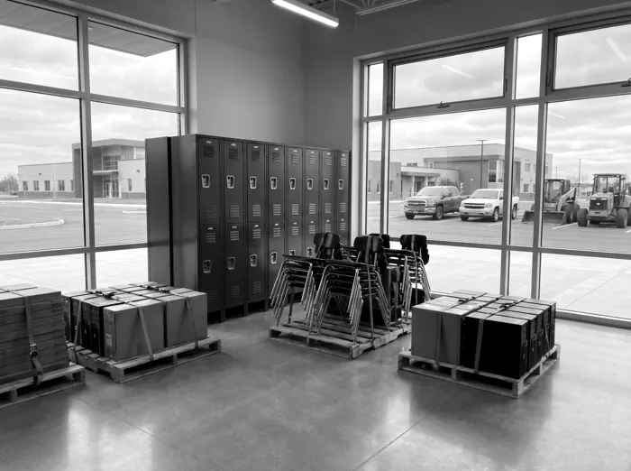
06Schools, universities & TAFEs50 items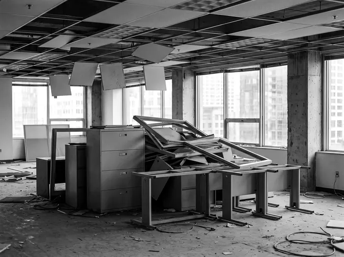
07Offices & commercial buildings51 items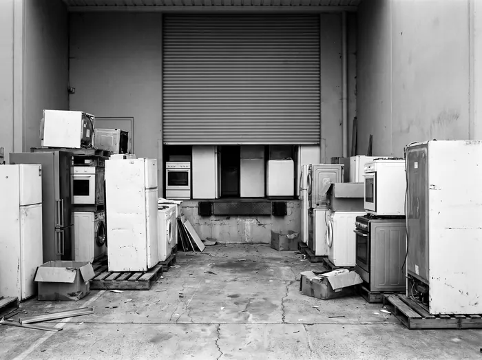
08Retail, whitegoods & hardware51 items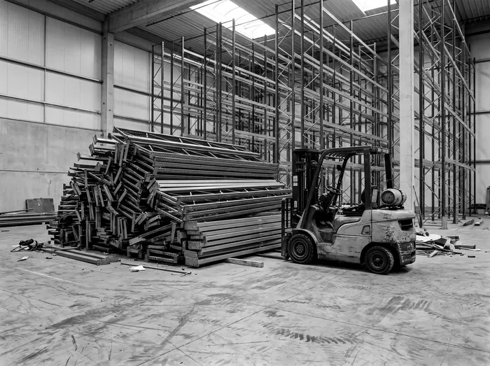
09Warehousing, logistics & distribution50 items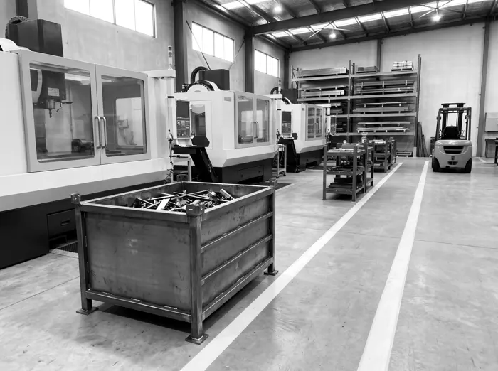
10Industry, manufacturing & engineering52 items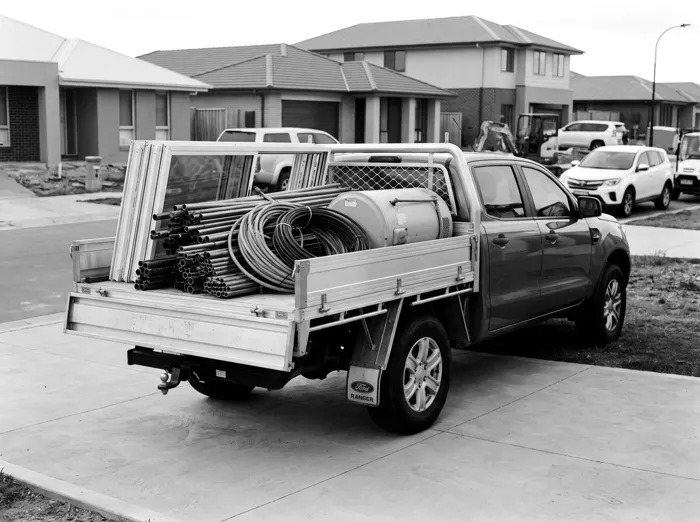
11Trades & contractors51 items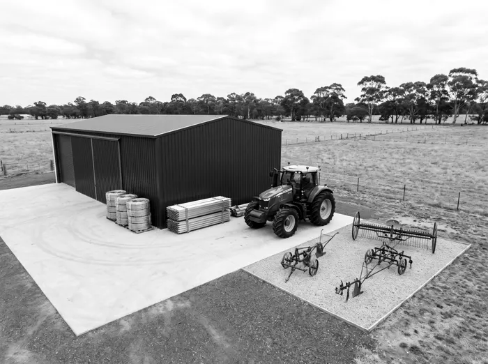
12Rural, farming & agriculture50 items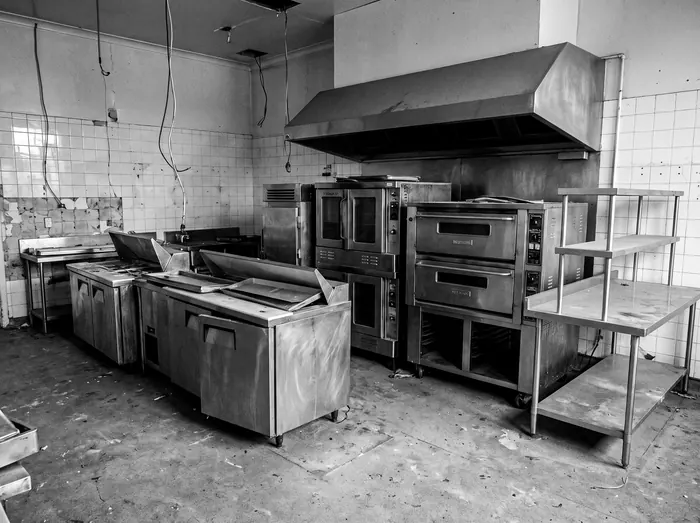
13Hotels, restaurants & venues51 items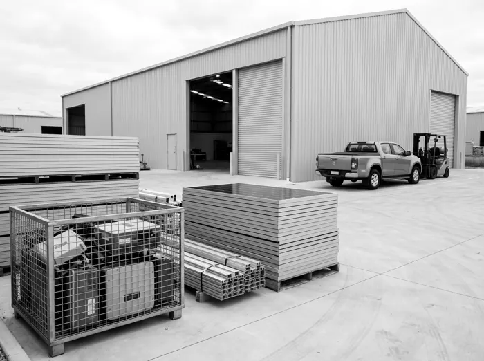
14Solar panels & solar equipment50 items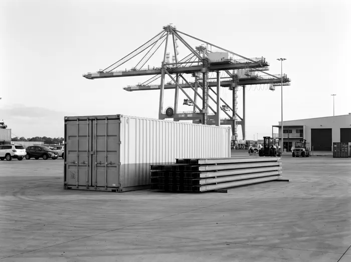
15Airports, ports & freight terminals50 items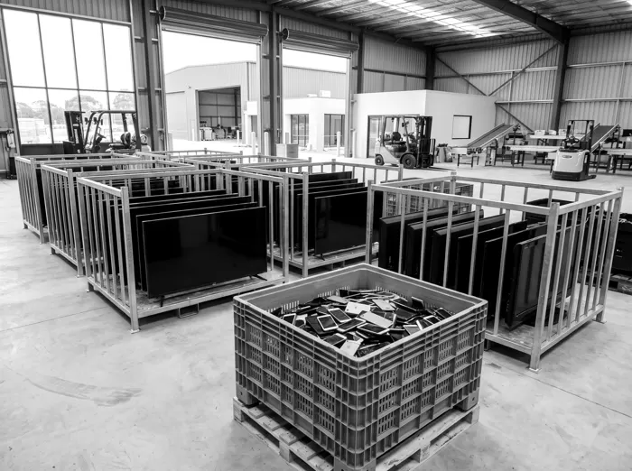
16Phones, screens & printers25 items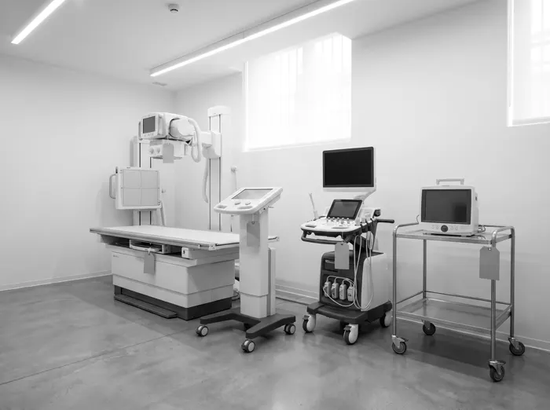
17Medical equipment20 items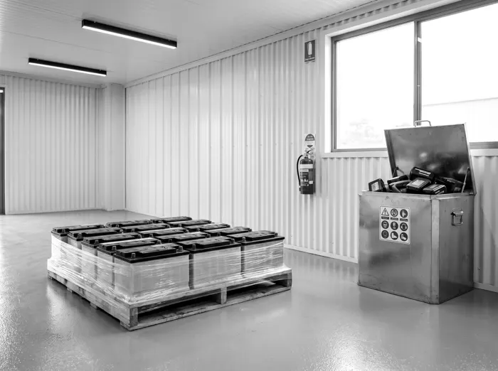
18Batteries14 items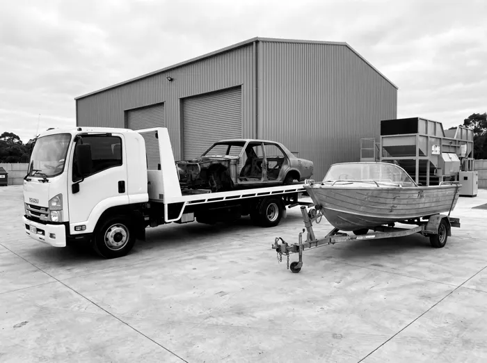
19Cars, boats, caravans & trailers20 items02 · Search
845 items across 19 categories, from council depots to commercial kitchens. Drop-off is free unless a fee is shown. Collection is by enquiry.
03 · Service area
The free drop-off is at North Geelong. Bins and collections reach across the west, along the coast and up to Ballarat.
Geelong and the north
The west
The coast
04 · Four ways
Drop it off yourself, free. Or have a bin dropped off, an operator brought in, or the big stuff taken away, by enquiry.

01Free, any volume, from a ute load to a truckload. Bring it in and unload under cover.
Drop-off details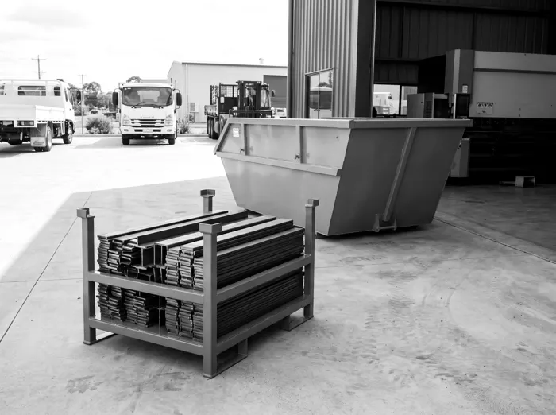
02A 1 to 2 m³ bin for regular steel, on a regular pick-up. Or a skip bin in 15, 32 or 42 m³ for a clean-up or a project.
Bin sizes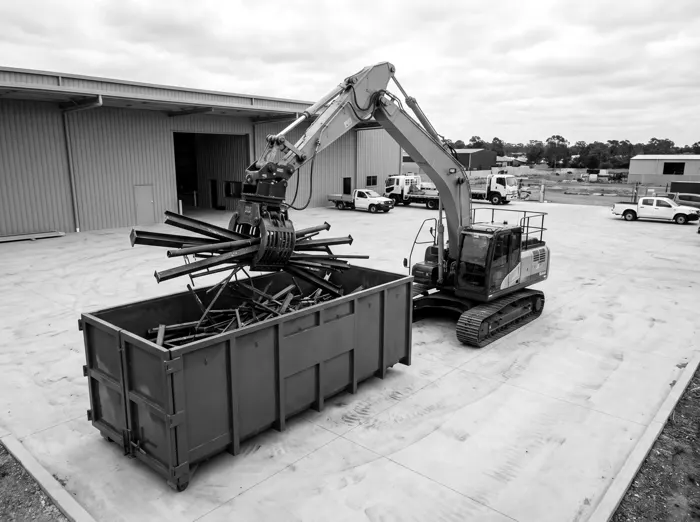
03For large quantities: a large bin, a grapple and an excavator, with the operator to load it on site.
How it works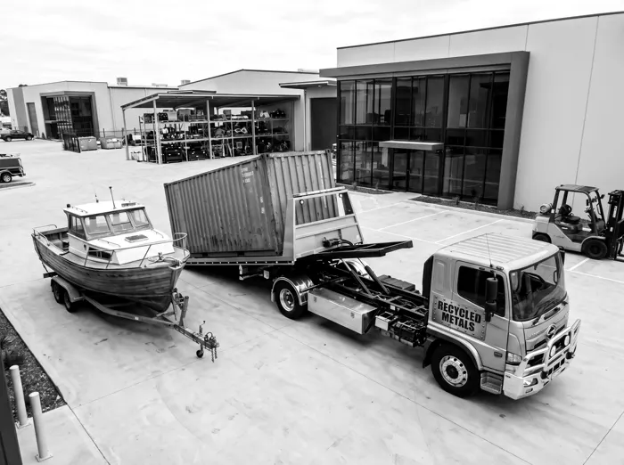
04Old shipping containers, boats and other big steel, taken away from the property or the site.
Big itemsCollected loads cross the weighbridge at North Geelong. The docket shows gross, tare and net, so the paperwork matches exactly what left the site.
Recycled Metals · Recycling metals since 1955
06 · Three kinds of load
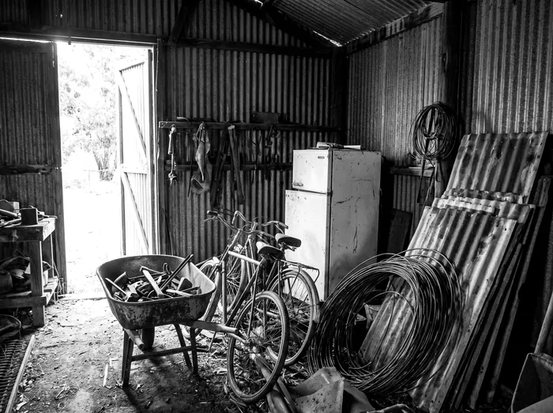
Households
Clearing the shed, the garage or the back yard. Old tools, bikes, roofing iron, whitegoods, BBQs and mowers, sorted from the rubbish and brought in free in the ute or on the trailer.
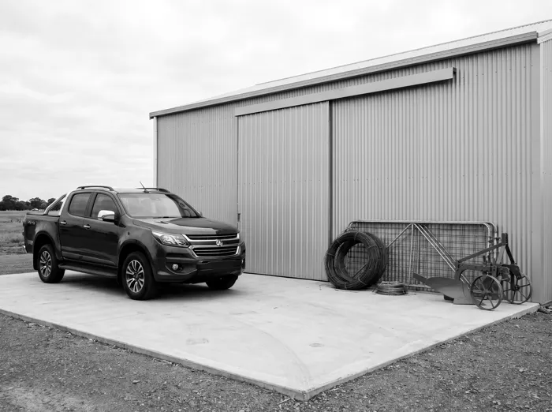
Rural
Old machinery, fencing wire, star pickets, gates, tanks and old sheds from across the property. Bring loads in free, have a bin dropped off, or bring in an operator with an excavator and grapple.
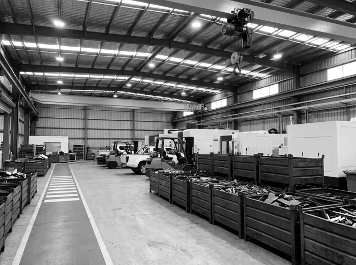
Commercial
Offcuts, racking, old plant and machinery, and steel from strip-outs and refits. Regular steel suits a small bin on a regular pick-up; projects suit a skip bin; the big jobs suit an operator and grapple.
07 · Load sizes
Every size of load is free to drop off. Too big to bring in? Get a bin or an operator, by enquiry.
 Bin
BinA wheelie bin of offcuts, old taps and fittings, a box of bolts.
Free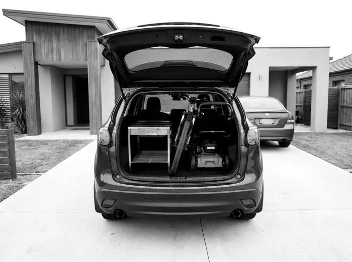
BootA BBQ frame, a bike, a mower with the fuel drained.
Free Back of the ute
Back of the uteRoofing iron, fence panels, an old hot water unit.
Free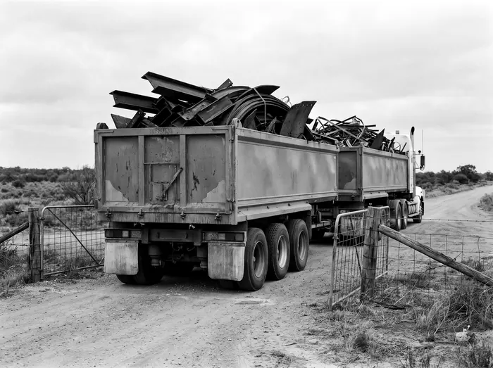
B-doubleSemi-trailer and B‑double loads go to Nunjara, Atkinsons Road, Moorabool.
To Nunjara08 · Backed by Recycle Group
Recycled Metals is a Recycle Group business. The North Geelong site is EPA Victoria registered, and the group runs certified management systems and eCheck, its own daily safety system.
90+
Streams separated on site at Furner Avenue, under cover
EPA
Victoria registered site, R000312600, North Geelong
ISO
9001, 14001 and 45001: Recycle Group's certified systems
6 days
Monday to Saturday for drop-off, no booking
Drop-off · Free
At Recycle North Geelong, 116 Furner Avenue, North Geelong. Monday to Saturday, 7am to 5pm, 6am to 6pm by appointment. No booking for a car, ute or trailer.
09 · Questions
Yes. Clean scrap metal is free to drop off at 116 Furner Avenue, any volume, from a bin to a B‑double. A few items carry a handling fee: gas bottles, fire extinguishers, nitrous canisters, solar panels and tyres on rims. Semi-trailer and B‑double loads go to Nunjara, Atkinsons Road, Moorabool.
No. Recycled Metals doesn't buy scrap metal. Drop-off is free, and bins and collections are by enquiry.
Send an enquiry or call Rory on 0433 115 500 with what it is, roughly how much and where it sits. Rory comes back with what suits: a bin, regular pick-ups, an operator with an excavator and grapple, or a tilt tray.
1 to 2 m³ bins for regular steel on a regular pick-up, and skip bins in 15, 32 and 42 m³.
Asbestos, chemicals and hazardous waste, full or hired gas cylinders, firearms and explosives, clinical waste, and anything still holding fuel or oil. Car bodies and big machinery: call Rory first.